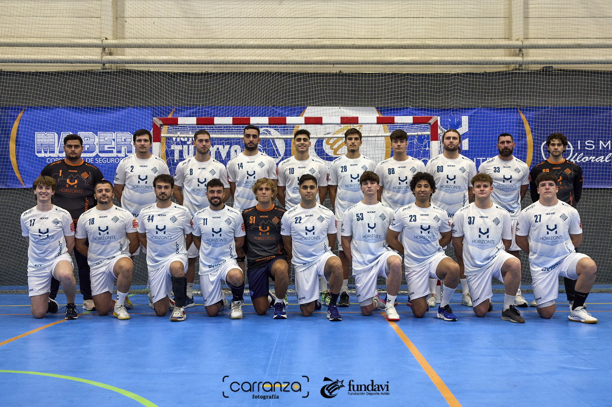

Me llamo Pablo Díaz Padilla, tengo 18 años y vivo en Avilés.
Durante mi tiempo libre entreno a balonmano, juego en un equipo de 1ª Nacional, la tercera máxima division Española de balonmano.
Llevo jugando a balonmano desde los 7 años y es mi hobbie favorito, siempre tengo ganas de entrenar.
También me gusta programar y si me aburro puedo estar horas con el ordenador escribiendo código.
Tambien me encantan las peliculas y las series, sobretodo las de acción o terror.
Y, por supuesto, me gustan los videojuegos, aunque no tengo mucho tiempo para jugar.
Hice bachillerato científico / tecnológico ya que siempre me gustaron las mates y los ordenadores.
Siempre tuve muchas opciones: